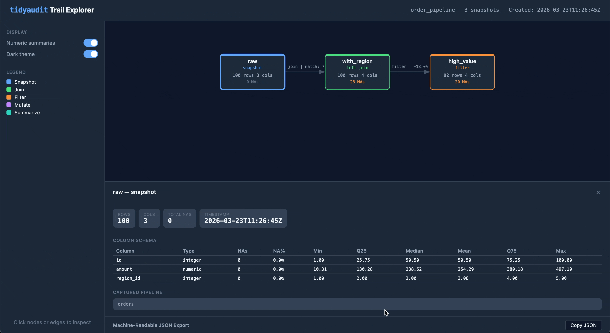

Pipeline audit trails and data diagnostics for tidyverse workflows
Audit trails track what happens at every step of a dplyr pipeline by recording metadata-only snapshots — row counts, column changes, NA totals, numeric shifts, and custom functions. You build a trail by dropping taps into your pipe: transparent pass-throughs that record a snapshot and let the data flow on. Operation-aware taps like left_join_tap() and filter_tap() go further, capturing match rates, drop counts, and stat impact. The result is a structured trail you can print, diff, export as HTML, or serialize to JSON. You can learn more in vignette("tidyaudit").
tidyaudit also includes a diagnostic toolkit for interactive data exploration — join validation, key checks, table comparison, and more — described in vignette("diagnostics").
Quick start
library(tidyaudit)
library(dplyr)
set.seed(123)
orders <- data.frame(id = 1:100, amount = runif(100, 10, 500), region_id = sample(1:5, 100, TRUE))
regions <- data.frame(region_id = 1:4, name = c("North", "South", "East", "West"))
trail <- audit_trail("order_pipeline")
result <- orders |>
audit_tap(trail, "raw") |>
left_join_tap(regions, by = "region_id", .trail = trail, .label = "with_region") |>
filter_tap(amount > 100, .trail = trail, .label = "high_value", .stat = amount)
#> i filter_tap: amount > 100
#> Dropped 18 of 100 rows (18.0%)
#> Stat amount: dropped 1,062.191 of 25,429.39
print(trail)
#> -- Audit Trail: "order_pipeline" -----------------------------------------------
#> Created: 2026-02-21 14:36:35
#> Snapshots: 3
#>
#> # Label Rows Cols NAs Type
#> - ----------- ---- ---- --- ------------------------------------
#> 1 raw 100 3 0 tap
#> 2 with_region 100 4 23 left_join (many-to-one, 77% matched)
#> 3 high_value 82 4 20 filter (dropped 18 rows, 18%)
#>
#> Changes:
#> raw -> with_region: = rows, +1 cols, +23 NAs
#> with_region -> high_value: -18 rows, = cols, -3 NAs
audit_diff(trail, "raw", "high_value")
#> -- Audit Diff: "raw" -> "high_value" --
#>
#> Metric Before After Delta
#> ------ ------ ----- -----
#> Rows 100 82 -18
#> Cols 3 4 +1
#> NAs 0 20 +20
#>
#> Columns added: name
#>
#> Numeric shifts (common columns):
#> Column Mean before Mean after Shift
#> --------- ----------- ---------- ------
#> id 50.50 49.66 -0.84
#> amount 254.29 297.16 +42.87
#> region_id 3.08 3.05 -0.03Three taps. Three snapshots. A complete record of what the pipeline did to your data — and what it cost.
Export as HTML
Share a trail as a self-contained HTML file — one file you can email, attach to a report, or drop into a compliance folder:
audit_export(trail, "order_pipeline.html")The output is an interactive flow diagram with clickable nodes and edges, light/dark theme toggle, and embedded JSON export. No server or internet required.

Features
Audit trail system
Build a structured timeline of your pipeline’s behavior. Drop taps into any dplyr pipe and get a traceable, diffable, exportable record of every step.
-
audit_trail()/audit_tap()— create a trail and record snapshots inside pipes -
left_join_tap(),filter_tap(), and friends — operation-aware taps that capture match rates, drop counts, stat impact, and relationship types -
tab_tap()— track frequency distributions across pipeline steps -
audit_diff()— before/after comparison of any two snapshots -
audit_report()— full pipeline report in one call -
audit_export()— self-contained HTML visualization -
write_trail()/read_trail()— serialize to RDS or JSON for CI pipelines and dashboards - Snapshot controls (
.numeric_summary,.cols_include,.cols_exclude) — fine-tune what each tap captures
Diagnostic toolkit
Standalone functions for interactive data exploration — the questions you ask in the console before, during, and after building a pipeline.
-
validate_join()— analyze a join before performing it (match rates, duplicates, unmatched keys) -
validate_primary_keys()/validate_var_relationship()— key and relationship validation -
compare_tables()— column, row, numeric, and categorical comparison between two data frames -
filter_keep()/filter_drop()— filter with diagnostic output and configurable warning thresholds -
diagnose_nas()/summarize_column()/get_summary_table()— data quality diagnostics -
diagnose_strings()/audit_transform()— string quality auditing and type-aware transformation diagnostics -
tab()— frequency tables and crosstabulations with sorting, cutoffs, and weighting
Installation
# Install from CRAN
install.packages("tidyaudit")
# Install development version
pak::pak("fpcordeiro/tidyaudit")Learn more
- Audit trail walkthrough — build your first trail, use operation-aware taps, export and share results
- Diagnostic functions guide — validate joins, compare tables, diagnose data quality, and more
Relationship to dtaudit
tidyaudit is the tidyverse-native counterpart to dtaudit, a data.table-based package on CRAN. Same design vocabulary, independent implementations — choose the one that matches your stack.